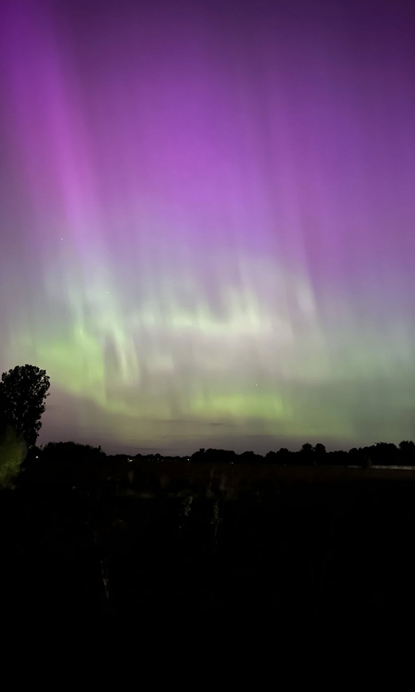
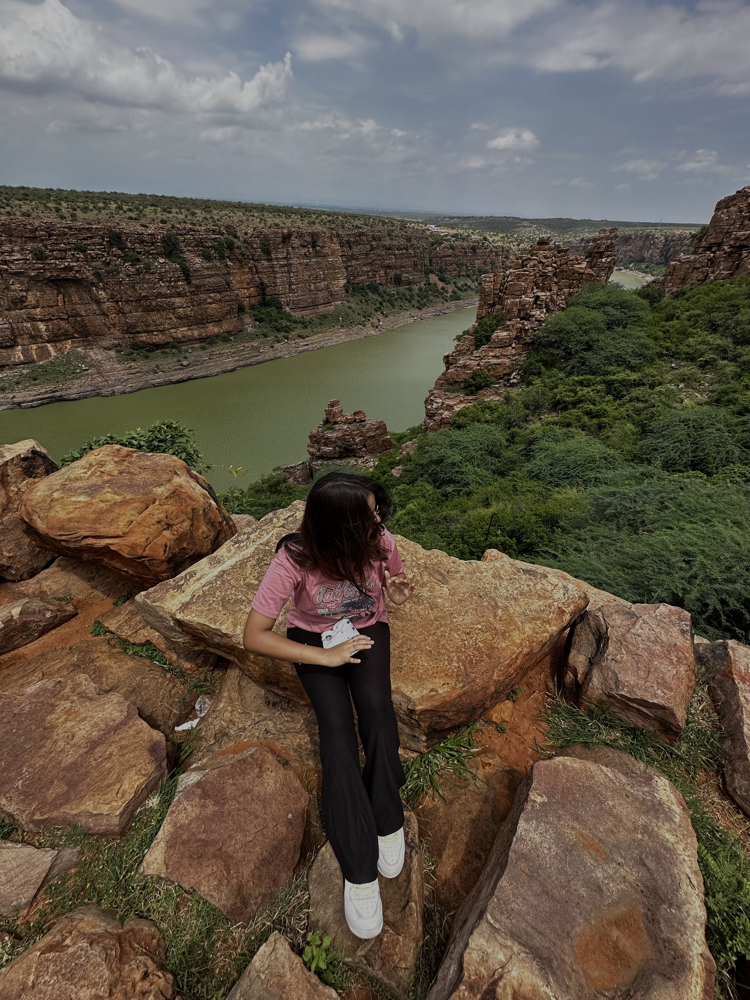

Adventuring
I love exploring new places, and this picture is from an unforgettable dune buggy ride in Dubai. It was a very cool experience and I can't wait to try it again sometime!

Photography
Photography has always been a passion of mine, capturing moments that tell stories. This particular shot is from a recent aurora sighting in Ohio, my hometown, a truly magical experience.

Hiking
Hiking allows me to connect with nature and discover breathtaking views. I enjoy finding new trails, each hike leading me to a hidden gem of natural beauty.

Can eating be a hobby?
Trying new foods wherever I go is more than just a necessity—it's a hobby! I love exploring different cuisines and savoring the unique flavors each culture has to offer.